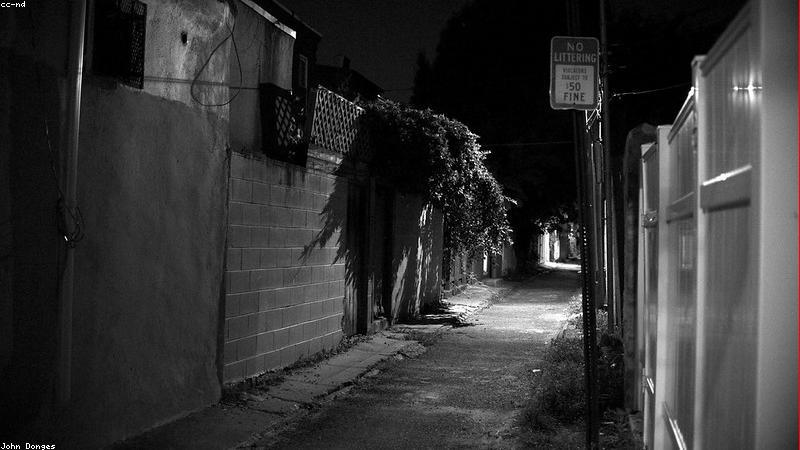
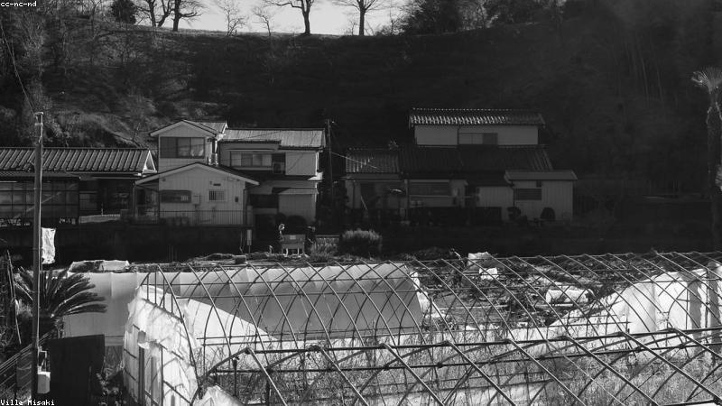
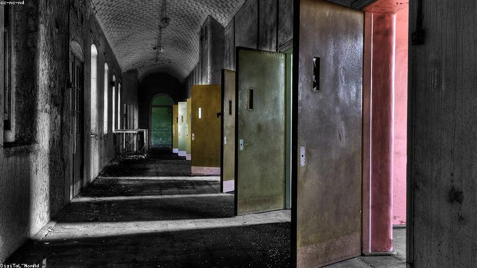
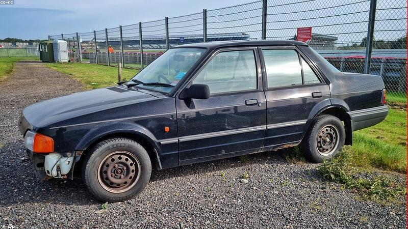
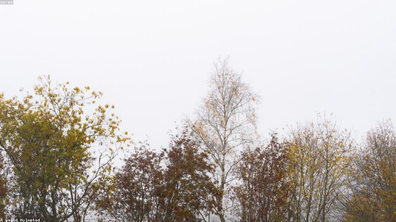

NO. 01
巷尾的第十一戶
有些房子，門牌從不連號。
閱讀故事
NO. 02
最後一通的來電
深夜的電話，那頭是你自己。
閱讀故事

NO. 03
雨夜的順風車
他上車時，後座已經坐著一個人。
閱讀故事
NO. 04
閣樓的腳步
上面從來沒有儲藏室。
閱讀故事

NO. 05
窗內的陌生人
你睡著時，有人替你活著。
閱讀故事
NO. 06
熄燈的遊樂園
打烊後，摩天輪還在轉。
閱讀故事

NO. 07
第七天的寄信人
人走後，信才到。
閱讀故事
NO. 08
鏡中遲到的倒影
你動手，它慢一秒。
閱讀故事
NO. 09
末班後的月台
車走了，人留下了。
閱讀故事
NO. 10
霧裡的回家的路
你以為到家，其實才出發。
閱讀故事

NO. 11
上鎖的第十三階
樓梯多出一層。
閱讀故事

NO. 12
寒冬裡的樹
最後一片葉，等不到春天。
閱讀故事
NO. 13
地下室的光
下面有人，一直在敲。
閱讀故事
NO. 14
風暴中的船
海上有人，一直游。
閱讀故事

NO. 15
停擺的鐘
時間到了，人不走。
閱讀故事

NO. 16
窗影
你看的不是景，是誰在看你。
閱讀故事

NO. 17
荒廢的旋转木马
音樂還在播，沒人騎。
閱讀故事
NO. 18
煙裡的臉
抽完最後一根，他出來了。
閱讀故事
NO. 19
水底的房間
下去，就回不來。
閱讀故事
NO. 20
無月之夜
沒有月亮，也能認路。
閱讀故事
NO. 21
走廊盡頭的門
走廊比記憶長。
閱讀故事
NO. 22
舊鑰匙
鑰匙開的不是鎖，是誰。
閱讀故事
NO. 23
霧橋
過了橋，就回不了頭。
閱讀故事

NO. 24
壞掉的娃娃
它笑，是因為不能不笑。
閱讀故事

NO. 25
冷掉的走廊
醫院裡，有些病房不住人。
閱讀故事
NO. 26
林中的影
樹後有人，一直跟。
閱讀故事

NO. 27
棄車
車裡的人，從沒下來。
閱讀故事

NO. 28
燭芯
蠟燭燒完，名字也燒完。
閱讀故事

NO. 29
空泳池
水乾了，笑聲還在。
閱讀故事
NO. 30
風暴天
天空裂開的那秒，看見自己。
閱讀故事
NO. 31
暗簾
簾後不是窗。
閱讀故事
NO. 32
石碑
名字刻上，就擦不掉。
閱讀故事

NO. 33
紅繩
繫上的，自己解不開。
閱讀故事

NO. 34
雪花电视
沒訊號的台，播著你的房。
閱讀故事
NO. 35
霧湖
湖底有人，在等新來的。
閱讀故事

NO. 36
樓梯間
往下，是另一層樓。
閱讀故事
NO. 37
舊照
照片裡的人，慢慢不見。
閱讀故事

NO. 38
鎖窗
窗外的人，想進來。
閱讀故事
NO. 39
冷鏡
鏡子比房間冷。
閱讀故事
NO. 40
霧路
走著走著，路沒了。
閱讀故事
NO. 41
地下室階
階下還有階。
閱讀故事

NO. 42
枯樹
冬天死的樹，春天不活。
閱讀故事
NO. 43
煙房
煙散，人不在。
閱讀故事
NO. 44
暗門
每間房都有一扇，開錯就換間。
閱讀故事
NO. 45
空教室
下課後，還有課。
閱讀故事

NO. 46
夜鴞
貓頭鷹叫，數人頭。
閱讀故事
NO. 47
影手
影子比人誠實。
閱讀故事

NO. 48
冷床
床的另一半，有人躺。
閱讀故事

NO. 49
霧田
田裡立著，沒種的人。
閱讀故事
NO. 50
暗櫥
櫥裡的不是衣服。
閱讀故事